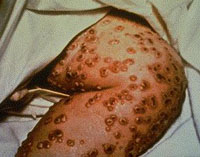

|  |
 |
| Images courtesy of CDC |
The Chinese are credited with making the observation
that deliberately infecting people with mild forms of smallpox
could prevent infection with more deadly forms and provide
life long protection. Knowledge of the technique, known as
variolation, worked its way west to Turkey by the 18th century.
Lady Mary Wortley Montagu, the wife of the British Ambassador to Turkey and who had once survived
smallpox,
had her children treated and brought the ideas
back to Britain, where research began on how to reduce the inoculation's sometimes-awful side effects.
In 1798, the British physician Edward Jenner published
his long-term observation that cowpox exposure protected milkmaids
from smallpox. To see if this protection could be artificially
induced, he exposed a "healthy boy" to cowpox virus from a milkmaid,
and then attempted to infect the boy with smallpox. (Obviously,
this experimental method is unethical by today's standards.) This
method works because cowpox shares antigens with smallpox, but
doesn't cause the disease.
Vaccination
comes from
the Latin word
for cow,
vacca |
|
Fortunately, the vaccine worked.
The boy had developed an immunity to smallpox from his exposure
to cowpox. The technique of vaccination against smallpox quickly
spread through the world. In 1980, the World Health Assembly
officially declared "the world and its peoples" free from endemic
smallpox. The Immunization
Action Coalition is an excellent source of information about
childhood, adolescent and adult immunizations and hepatitis
B educational materials.
|
Disease |
Max. cases (year) |
1996 cases |
| Measles |
894,000 (1941) |
500 |
| Diptheria |
207,000 (1921) |
1 |
| Mumps |
152,000 (1968) |
600 |
|
Since the days of Jenner, scientists have made great progress in developing vaccinations for many diseases. The table to the left
shows the effectiveness of three vaccines: measles, diptheria, and mumps.
|
Discrimination of self from nonself
| The success of the immune system depends on its ability to discriminate
between foreign (nonself) and host (self) cells. |
|
Survival requires both the ability to mount a destructive immune
response against nonself and the inability to mount a destructive response against
self. |
 |
|
-David Huston, Biology of the Immune System,
JAMA 278 (22) |
|
|
|
When an organism is threatened by microorganisms, viruses, or cancer cells,
the immune response acts to provide protection.
Normally, the immune system does not mount a response against self. This lack
of an immune response is called tolerance.
In some cases, the immune system does mount an immune response against self.
If an error is made, and an immune response is made against self, tolerance to
self is lost. This condition is called autoimmunity (from Greek, "self-immunity").
Examples of autoimmune diseases in humans are: asthma, lupus, and arthritis.
|
The nude mouse cannot mount an immune response
| The nude mouse has a defect in its immune system, and can only live if protected
from pathogens. The mouse to the right has a transplant of rabbit skin, and can't
reject the foreign tissue. Mice with immune deficiencies are very useful in cancer
research because human cancer cells can grow into tumors allowing new ways to
test cancer therapy. |
Used with permission (from where?) |
Important definitions
This problem set will make use of these terms, and give examples of their significance.
- The Immune System
- Cells in our bone marrow, thymus, and the lymphatic system of ducts and nodes, spleen, and blood that function to protect us.
- Antigen
- Anything causing an immune response, usually foreign material but may be our own tissues.
- Pathogen
- Any disease causing micro-organism.
- Tolerance
- Non-reactivity of the immune system, usually refers to "self" but may include foreign tissue in organ transplants.
- Autoimmunity
- A failure of tolerance, the immune system reacts to self.
- Chemokines
- Molecules released by pathogens and infected tissues to attract cells of the immune
system.
- Cytokines
- Signaling molecules released by one cell to cause a response in another. Signaling is extremely important in
our immune response.
- Innate immunity
- Protection that is always present. Includes phagocytic (cells that
eat other cells) macrophages and dendritic cells.
- Adaptive immunity
- Protection that arises by an immune response, including humoral immunity producing antibodies and cellular immunity.
The Biology Project > Immunology
> Immunology Problem Set
The Biology Project
The University of Arizona
Thursday, July 13, 2000
Contact the Biology Project
http://biology.arizona.edu
All contents copyright © 1999. All rights reserved.
|